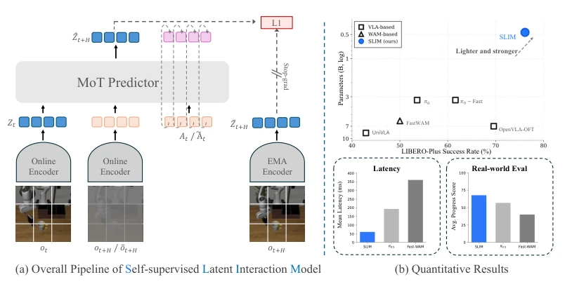
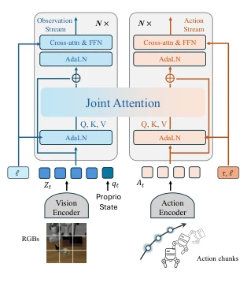
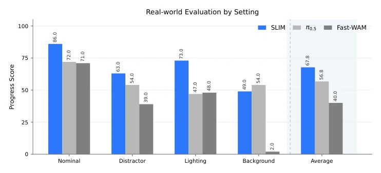
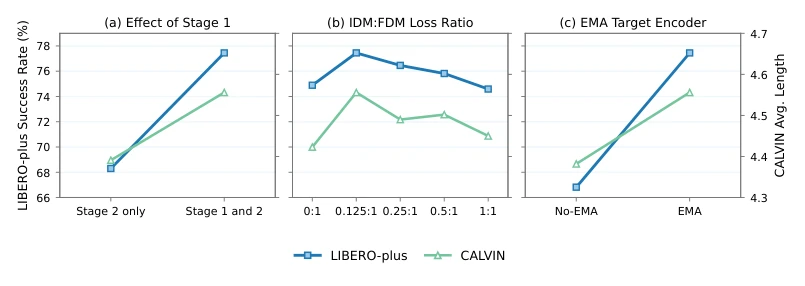
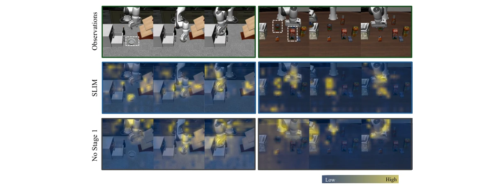
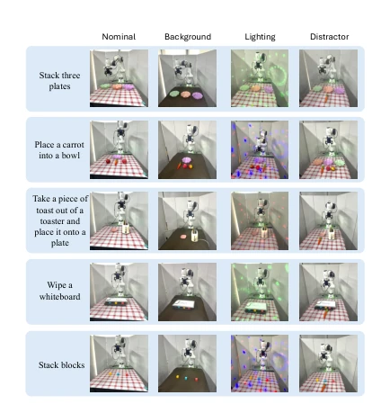
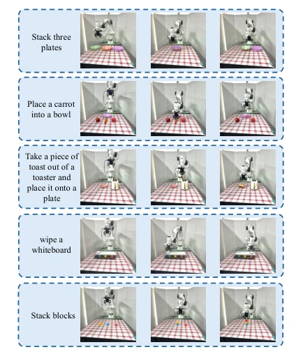
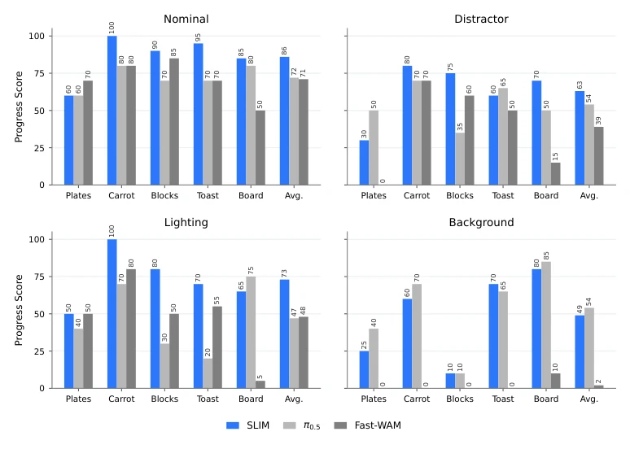

当前具身智能主要面临两大范式的困境。一是以 OpenVLA (Kim et al., 2024) 和 π0 (Black et al., 2024) 为代表的大规模 VLA 模型，虽然语义理解强大，但将感知、语言理解和动作生成耦合在巨大的多模态骨干中，导致控制步骤计算冗余，且动作与观测变化的关系往往是隐式学习的，缺乏显式的动力学约束。二是以 Fast-WAM (Yuan et al., 2026) 为代表的 World Action Models，它们通过预测未来像素或视频来对齐控制，但这往往浪费算力在无关的背景纹理等细节上，且推理时的视频生成会显著增加延迟。SLIM 旨在解决这些痛点：提出一种紧凑的、动作 grounded 的潜在交互策略，既保留语言条件，又显式建模动作与观测的转换，避免像素级预测的开销，实现低延迟、高鲁棒性的控制。
—

Figure 1: Overview of SLIM. A compact MoT backbone models interactions among observation latents, continuous action tokens, and predictive future slots. Complementary inverse- and forward-dynamics objectives learn action-grounded predictive latents from robot trajectories, enabling robust, low-latency control with a compact policy.
Figure 2: Action-grounded masked trajectory prediction. (a) Inverse dynamics predicts the flow velocity of noised actions conditioned on current and future observations. (b) Forward dynamics predicts masked future observation latents from the current observation and clean actions, supervised by a stop-gradient EMA target. (c) Objective-specific attention masks control information flow. Auxiliary tokens are omitted for clarity.

Figure 3: MoT backbone with observation-action joint attention and per-stream language cross-attention.
Figure 4: Overview of the evaluation settings. (a) Representative physical manipulation tasks used in the real-world evaluation. (b) LIBERO and LIBERO-Plus evaluate language-conditioned manipulation and robustness under controlled perturbations. (c) CALVIN ABC→D evaluates long- horizon task composition in an unseen environment.

Figure 6: Average real-world progress by evaluation setting. Each setting averages the five tasks, and the final group averages all four settings. Task-wise results and scoring milestones are provided in Appendix A.6.

Figure 7: Ablations of the action-grounded masked-prediction pipeline. We compare Stage-2-only training against the full two-stage recipe, vary the IDM:FDM loss ratio, and evaluate the EMA target encoder on LIBERO-Plus and CALVIN.

Figure 8: Action-grounding analysis across two representative manipulation sequences. The top row shows observations, with task-relevant objects indicated by dashed boxes; the middle and bottom rows show action-to-observation attention for SLIM and the step-matched policy without Stage 1. Warmer colors denote larger attention. SLIM more consistently follows the manipulated object, gripper, and their interaction region as the task progresses.
其他图片Other Figures

Figure 9: Task-specific real-world evaluation set- tings. Columns show the nominal setup and the background, lighting, and distractor perturbations.

Figure 10: Progress-score milestones for the five real-world tasks. Each row shows the initial state, partial completion (score 0.5), and full completion (score 1).

Figure 11: Task-wise real-world progress under the nominal setting and the distractor, lighting, and background perturbations. Each panel reports all five tasks and their average over 10 trials per task.